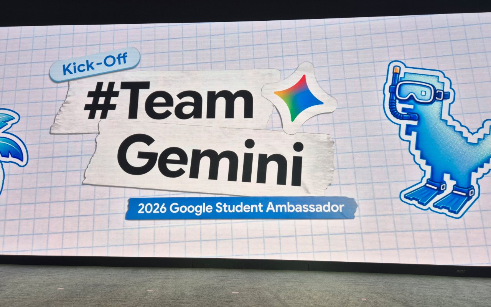
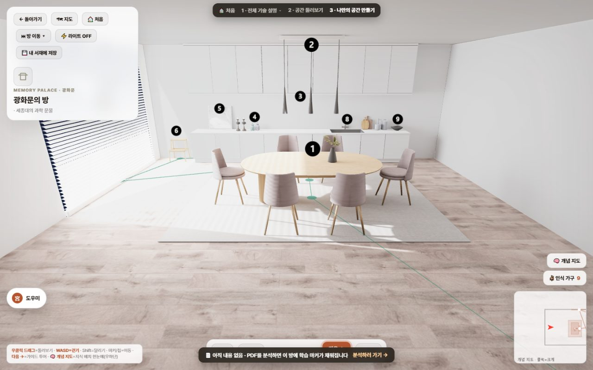
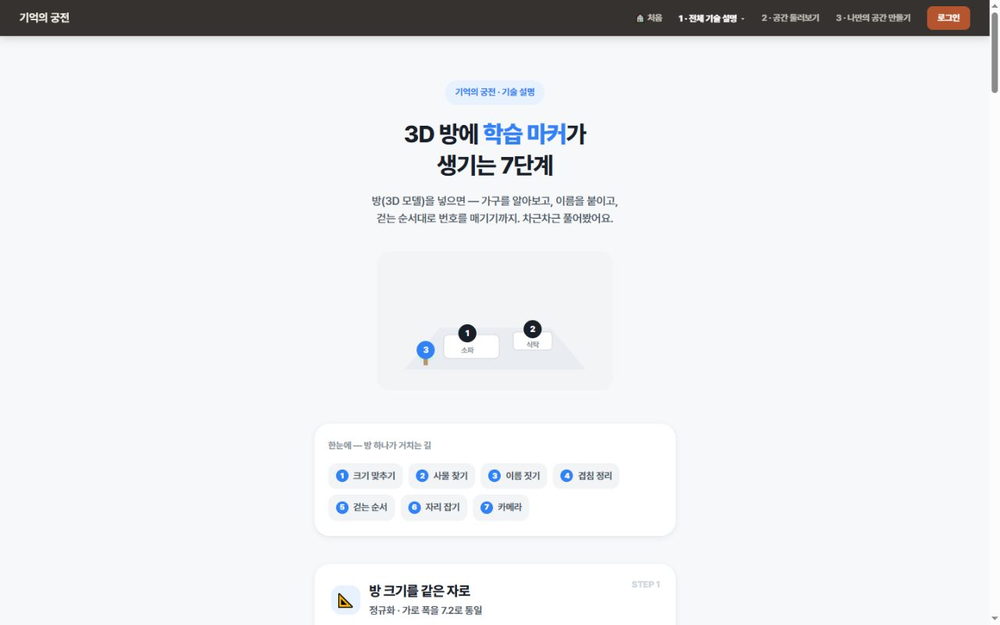
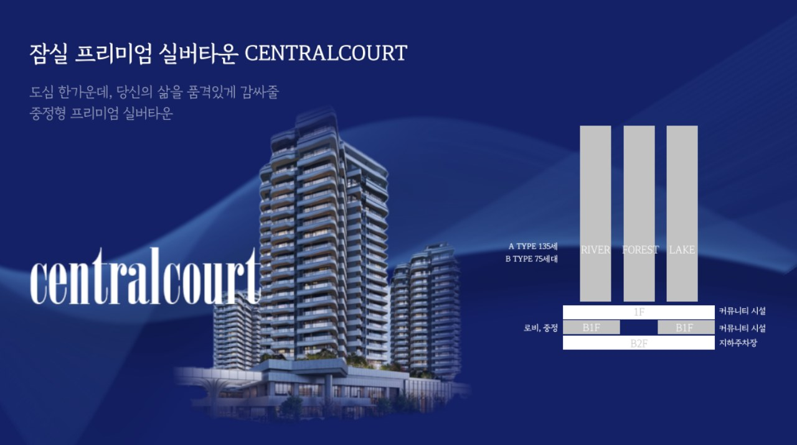
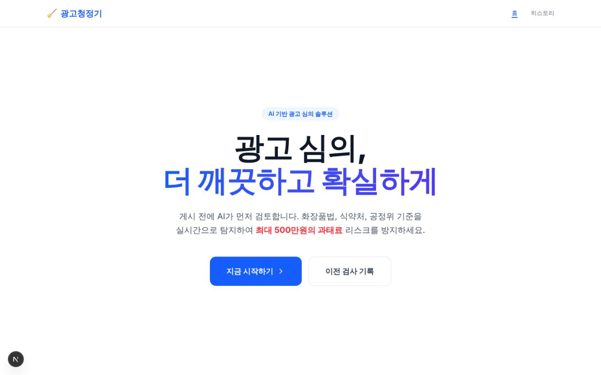
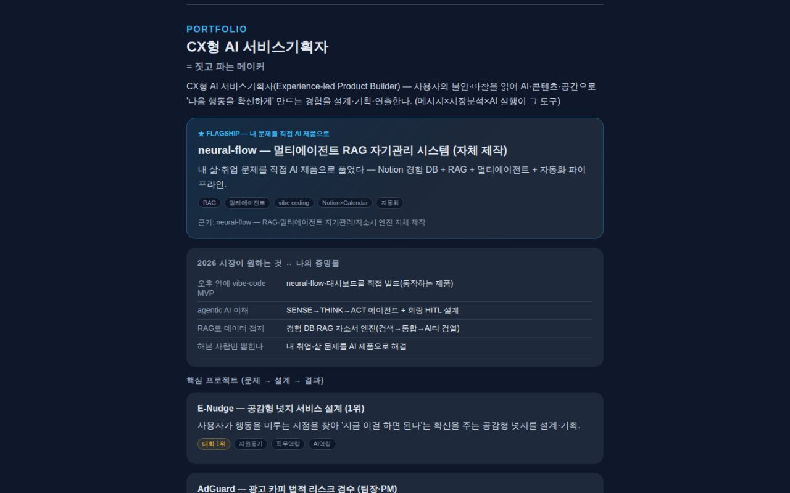
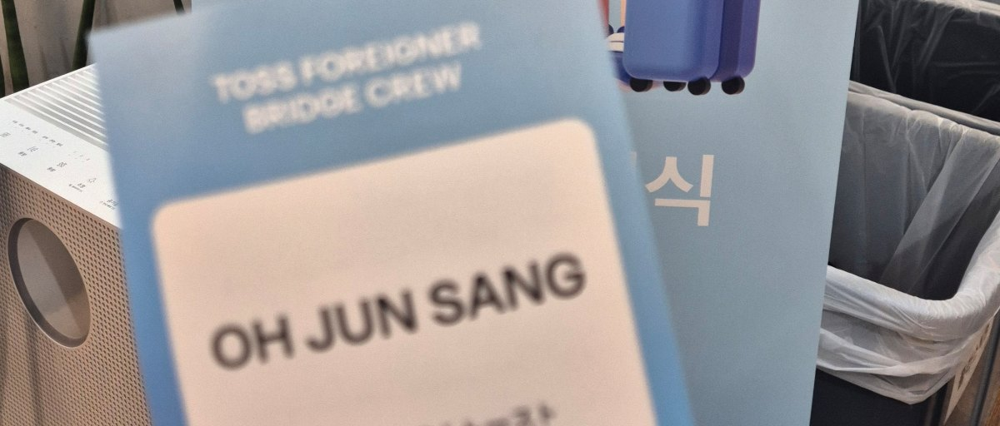
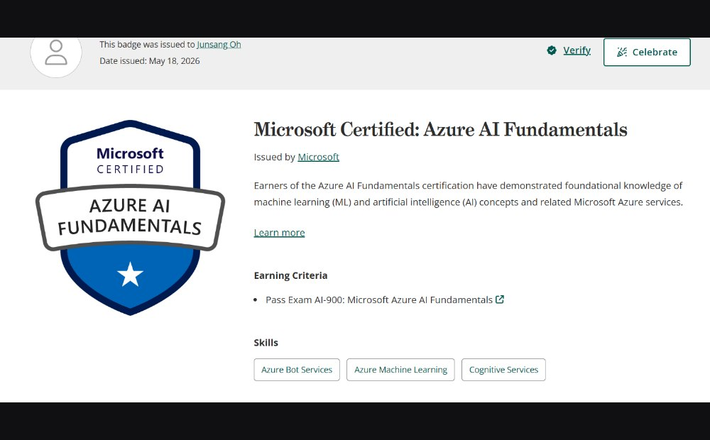
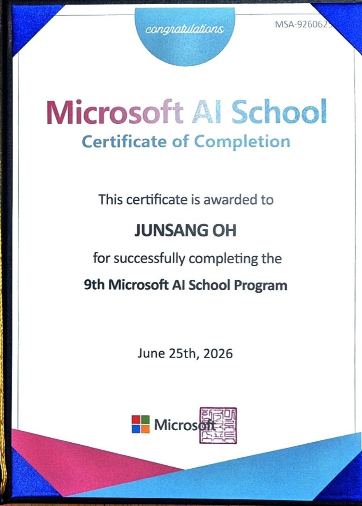
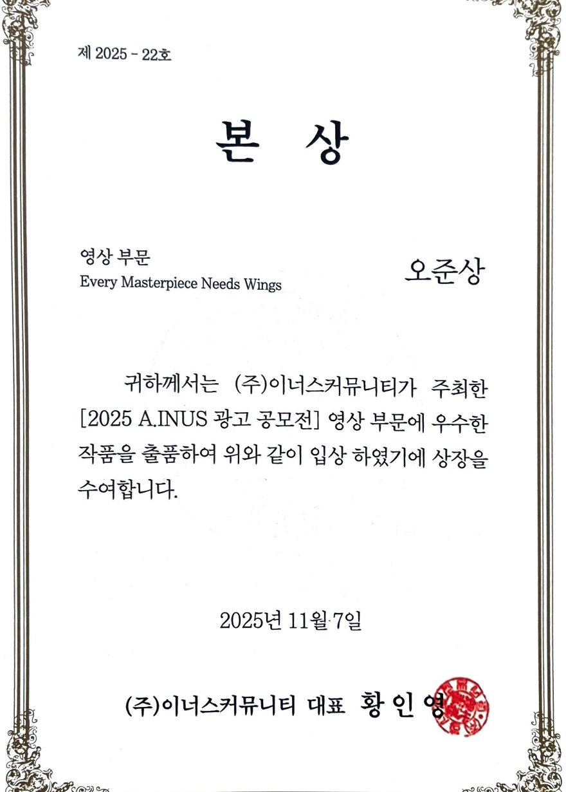

2026 Google Student Ambassador
#TeamGemini · 킥오프 2026.08.06
- 국내 대학생 대상 Gemini 확산·마케팅 앰배서더
- 활동 기간 2026.08 — 12 (5개월)
- 서류·면접을 거친 선발 후 킥오프 참여

오준상 · Spatial Intelligence 기획자
사람들이 '선택'하는 이유.
공간 데이터를 AI로 읽어 막막함과 불신을 줄이는 일.
어디에 살지, 어디에 가게를 열지, 어떤 지역을 선택할지. 비용과 이동만이 아니라 사람마다 다른 우선순위와 장소의 맥락이 함께 얽힌 판단.
사람이 무엇을 보고 어떤 감정을 느끼며 왜 하나의 선택에 이르는지, 오래전부터 품어 온 궁금증.
사람의 감정과 행동을 읽는 훈련. 시청자가 화면을 넘기는 지점의 역설계.
도시계획·부동산에서 배운 공간의 데이터와 법, 그리고 지역의 가치가 만들어지는 방식.
머릿속에만 있던 공간 기반 서비스를 직접 구현할 수 있게 된 조건.
정보의 양이 아니라
스스로 납득할 수 있는 근거.
학습 자료의 의미 구조를 3D 공간으로 옮기고, 그 안을 1인칭으로 걸으며 외우는 도구.


잠실 도심형 고급 실버타운 사업계획. 입지와 의료와 교통 데이터를 고령층이 실제로 따지는 기준으로 옮기는 작업.

위반 통보를 받고도 다음 문장을 쓰지 못해 멈추는 실무. 근거와 대안을 함께 주는 방식으로 푼 검수 서비스.

기획에서 멈추지 않고 배포까지 끌고 간 개인 도구, 그리고 사람의 반응을 다뤄 온 제작 이력.



개인 기획·제작 '구리 청년의 내일' · 구리시 공고 제2025-1480호 (2025.9)
E-Nudge — 공감형 넛지 설계
'Every Masterpiece Needs Wings' · 제2025-22호 · ㈜이너스커뮤니티 (2025.11.07)
훈련기간 2025.12.29 — 2026.06.25 · 증서 MSA-926062
제68기 · ㈜금융사관학교 (2025.3)
멘티로 약 8개월(2025.4 — 11) 참여 후 수료
Microsoft · 2026.05.18 발급
수료증 2026.09.12 발급 예정 · 현재 활동 중


